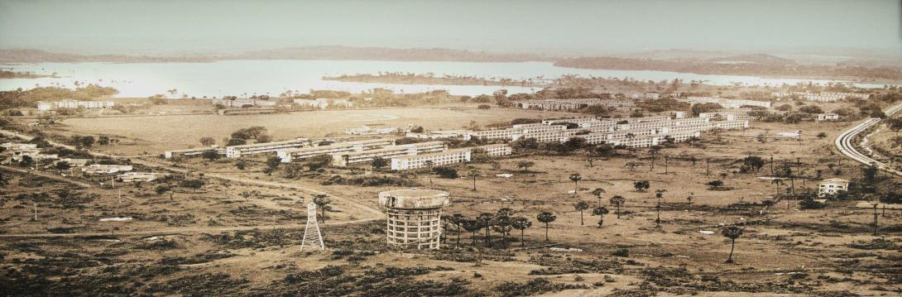
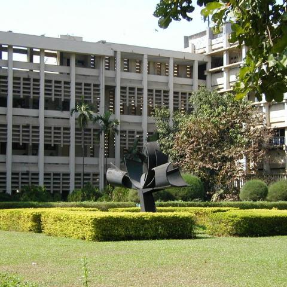

History In 1958, IIT Bombay was established as part of a government initiative inspired by recommendations from a committee led by Sir Nalini Ranjan Sarkar. IIT Bombay's campus covers 200 hectares in Powai, Mumbai. It received significant support from UNESCO and the government of the USSR, with equipment, experts, and fellowships facilitating its growth. In 1961, an Act of Parliament granted it the status of an institution of national importance, allowing it to confer its own degrees and diplomas.
IIT Bombay is an autonomous institute and deemed university governed by a board of governors, chaired by the president of India. It operates under the guidance of the IIT Council, established by India's ministry of education (MoE) (earlier called human resource development). The director, appointed by MoE, leads the institute for a five-year term, overseeing academic matters and serving on various committees. The senate, composed of professors and nominated members, ensures academic standards. The administrative functions are managed by the registrar and senior officials. The institute advisory council, comprising industry and academic experts, provides input on policies and goals.
